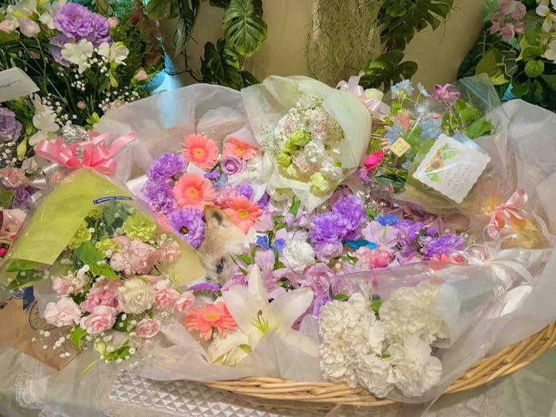

６月２日
かぼちゃんと
最後のお別れをしました。

お友だちワンコの
お別れで
去年
ここを知りました。
なんて
心のこもった
温かい
お葬式をして
くださるのだろうと思い
かぼちゃんの時も
ここにしようと
決めていました。
佐倉ヒルサイド倶楽部
さんです。
初めて
電話をしました。
その後も
かぼちゃんの体の
冷やし方や
次々と出てくる
小さな不安に
丁寧に
相談に乗って
くださったので
とても
助けられました。
「かぼすちゃん」
ということで
ということで
恐縮してしまうくらいの
ご配慮を頂きました。
時間もたっぷり
取ってくださり、
そのお陰で
私たち家族も
参列者のみなさんも
ゆっくりとお別れを
することができました。
ゆっくりとお別れを
することができました。
方々と
ワンコ仲間達が
たーくさん
来てくれたんです！
一週間ぶりに会った
かぼちゃんは
やっぱり
天使のようでした♡

好きなオモチャとか
いつも着ていた
服とか
持たせたい物が
あったら
用意してきて下さいと
言われて
悩みました。

かぼちゃんが
喜ぶとしたらやっぱり
さつまいもと
ブロッコリーと
もやしですよね。
朝用意している
最中に
食べたくてたまらない
銀ちゃんに
さんざん
邪魔をされましたよ。

これでもかって
いうくらいの
たくさんの花に
埋もれて

かぼちゃんは
空へと
昇って行きました。

ワン友さん達に
お願いをしました。
最後にみんなで
モニュメントの所で
かぼちゃんのために
あることを
してくれませんか？って。

雷鳴が
聞こえていたのに
みんなが
集合した途端
雲間から
陽が射したんですよ。
やっぱりかぼちゃん、
やってくれます！
そこで
みんなで空に向かって
叫びましたよ。
かぼちゃん、
ありがとうって。
みんなの声、届いたよね？
かぼちゃん。

かぼちゃんが
着ていたドレスは
火葬する時に
脱がせました。
これは
私が死んだ時に
棺の中に
入れて貰います。
このドレスを持って
かぼちゃんに
会いにいくんだ！

かぼちゃんが
お骨になってからは
時々
ドレスを抱きしめて
泣いています。
もっともっと
一緒にいたかった。
１９歳の誕生日を
迎えて欲しかった。
でも仕方ない。
定められた
寿命だったんだ。
もしあの時
無理をさせなければ
もう少し
生きられたのかな？
いや、かぼちゃんは
楽になって
喜んでいるに違いない。
いろんな思いが
頭の中を
ぐるぐる巡っています。
＊＊＊＊＊＊＊
「かぼすちゃんとおさんぽ。」の
更新通知が受け取れます！
登録・フォローお願い致します(^^)
↓
２ポチ
↓
コメント
コメント一覧 (26)
かぼちゃんお空に昇っていかれたのですね
お空に昇る時の青空、皆様が集合した際の日の射し込み、さすがかぼちゃん！
素晴らしい奇跡を最後まで見せてくれるなんて
本当に本当に天使ですね
改めて絶対に絶対にかぼちゃんを忘れません
かぼちゃん、たくさんの癒やしをありがとう
かぼママさん、幸せな気持ちなるブログをありがとうございました
これからも応援しております！
kabosu112
が しました
しました
kabosu112
が しました
しました
kabosu112
が しました
しました
落ち着いたらあんなに事あったね、あんなイタズラしたねと話してあげて下さい。 天使になったかぼちゃんが近くで「ママありがとう💕」と笑ってくれると思います
.°ʚ(՞ . ̫ . ՞)ɞ°.
kabosu112
が しました
しました
愛されて愛されて旅立ったかぼちゃん。
かぼちゃんは、自分の犬生に大満足だったんじゃないかな。またいつか、ママさんの元に帰ってこようって思っていると思います。
kabosu112
が しました
しました
家のさくら😸も4年前に私の腕の中で息を引き取りました。すぐ仕事に行かないといけなくて、泣きながら仕事しました。やっぱり今でもたまに涙が止まらなくなる時があります。でも姿がみえなくても、いつも一緒、ずっとずっと一緒だから大丈夫です。又、会える日まで元気に楽しく生きていきましょう！
kabosu112
が しました
しました
kabosu112
が しました
しました
どうしても 自分の時と重なってしまいます。
でも 素敵な場所で お空に旅立ったんですね🌈
お供えを用意している時の ぎんちゃんの姿が 目に浮かびます😆
しばらくは 何をしても泣いてしまいますけど たくさん泣いて下さい。
これからも 応援しています💐
kabosu112
が しました
しました
パパさん ママさん 沢山のかぼちゃんファンの方々に見守られて良かったです
かぼちゃんママさん 本当にお疲れ様でした
時として あーすれば こーすればと後悔の気持ちが出るかもしれませんが、いつも かぼちゃんファーストで介護されていましたよね
かぼちゃんなら ママさんの気持ちを十分にわかっていてくれていたと思います
どうか ご自分のお身体に気をつけて体を休めて下さい。
そして いつも笑顔のママさんでいてください。
その方がかぼちゃんが喜びます^_^
kabosu112
が しました
しました
我が家の柴犬は今年の２月に事故で亡くなりました。
まだ7歳でした。
かぼちゃん、お空で柴犬友達と楽しく遊んでね。
kabosu112
が しました
しました
かぼすちゃんのドレスを抱き締め泣くママさんを思い…
胸がギュ～ッとしめつけられました…😢
今はどんな言葉も慰めにはならないと思いますが、少しずつ少しずつ時間が悲しみをやわらげてくれる事を祈ります！🙏🍀🍀🍀
kabosu112
が しました
しました
、お母さんに撫でられながら かぼす家で旅立つ事を選んだかぼちゃん 幸せだったネ
後悔も涙も感謝も全て供養になると私は、思います
大塚愛さんの♪プラネタリウム♪を 久々に聴きました
以前亡くしたペットを思いワンワン泣いた曲です
かぼ父さん かぼ母さん 頑張らないで下さいネ
ご報告ありがとうございました
kabosu112
が しました
しました
かぼちゃんの犬生は本当にしあわせだったと思います♪
キャンプに行ったこと、カヤックに乗って泳いだこと。
旅行にもいっぱい行ったよね♪
かぼちゃんは今も笑顔でかぼすママさんの傍にいますよ♪
だから泣かないでって言ってるような気がします。
kabosu112
が しました
しました
kabosu112
が しました
しました
今迄密かにかぼちゃんを応援させて頂いてました。
かぼちゃんが可愛くて可愛くて大好きでした。
環境柄柴犬飼えずいつかは引越ししていつかは…とかぼちゃんのブログを見ながら思ったものです。
なのでかぼちゃんの訃報は本当にショックでした。
そして今日かぼちゃんの小さくなった遺骨を見て涙が止まりませんでした。
かぼちゃん…かぼちゃん…かぼちゃん…
大好きでした。
1ファンの私ですらこの様な悲しみ…
かぼママさんなかぼパパさん、ご家族の方の悲しみはいかばかりかと思います。
かぼちゃんはかぼママに出会えてかぼパパさんに出会えて、幸せだったと思います。
私もかぼちゃんに出会えて幸せでした。
ありがとうございました。
kabosu112
が しました
しました
何度も歩いたふるさと広場には、今頃、あかりがつき始める頃でしょうか。。。
お別れ会、本当のまたねと、かぼちゃんに会わせていただき、ありがとうございました🙇♀️
最後の最後まで、とっても可愛かったかぼちゃん🐶🌈✨
天使になってみんなを見守っていてね❣️
かぼママさん、やっぱり寂しいですよね😭
銀ちゃん、つーちゃん、オニちゃんに癒されて下さいね。
kabosu112
が しました
しました
かぼすちゃんを知ってから長い期間、ずーっと癒されてきました。
たくさん良い事があったよね。 楽しかったね。
時おり、空を見上げて「かぼすちゃん、ありがとう～」って言ってます。
天使のかぼちゃんは、きっと世界中を駆けめぐって、私の家の空にも来てるよね。
ママさんの傍にいつも居ながらね。
ママさんは、かぼすちゃんが空に旅立ってすごく寂しいと思います。
「私は傍にいるからね」って、なでなでしてあげてね。
kabosu112
が しました
しました
kabosu112
が しました
しました
このブログからはワンコ介護のコツや心得を教えて頂きました。とても私が真似できないお世話もやり遂げるあつこさんの姿を尊敬し、何度も復活するかぼすちゃんの姿に元気をもらっていました。
きっとかぼすちゃんはお空に登る時に手を振っていたんじゃないのかな…と思います。
我が家のワンコを見送って5ヶ月になりますが、思い出さない日はないし、涙がこぼれる日もあります。今のあつこさんの気持ちを考えると私も切なくなります。どうか皆さまの心が安らぐことをお祈りしております。
kabosu112
が しました
しました
もうすぐ2年経つ愛犬の旅立ちですが。一気に思い出して、号泣してしまいました😭
食べないと死んじゃうんだよぉ～と、泣いて怒ってしまった事。亡くなった後に、食べれないのに、仕方ないのに、何であんな事言ってしまっちゃったんだろう。と、思いっっっ切り後悔しました。
大好きなお姉ちゃん（愛猫）が、心臓の発作で一瞬で急死してしまい。泣き叫びながら散歩をして。僕（愛犬）は、旅立つ準備をこの人にさせなきゃいけない。と、きっと思ったんだと思います。1年かけて、心の準備をさせてくれました。
でも、やっぱり、ずっと一緒に居たかった。
私も、自分の棺に、結婚式で着せた愛猫のドレス&愛犬のタキシードを入れてもらおうと決めました。
感情が、ぐるぐるします。
でも、幸せをわけてくれたかぼちゃん&かぼちゃんご家族の皆様。
有難うございました。
仲良しなぎんちゃんの様子は、大丈夫でしょうか?
ママさんは、もちろん。皆様、体調崩されません様に。
kabosu112
が しました
しました
ずっと近くに居ますよ
お空と行ったり来たりしてるはずです
目には見えないけどいるんです
また必ず会えますね！
かぼちゃんと！！
kabosu112
が しました
しました
ママさん、パパさん、長い間お世話してくれて、ありがとう。体は無くなってしまったけれど、心はいつまでもママさんの側にいるよ。って言っていることでしょう。
少し時間はかかるかもしれないけれど、ママさんが元気になられることを、かぼちゃんは一番望んでいると思います。
kabosu112
が しました
しました
かぼちゃんはもともと天使みたいな子だったけど
ホントの天使になったんですね
最後まで 美人でしたね 目が大きくて
ドレスもステキで お花いっぱいで旅立っんですね
もう 天国に着いたかな？
ケンちゃんは 迎えに来てくれたかな？
お母さんのお母さんや なつこババちゃんに会えたかな？
天使になって ニコニコ見てくれてるかな?
よく 亡くなったのに重みを感じるとか 家の中で 何かが横切ったとかいいますよね
天国で オヤツ食べてるかな?
かぼちゃん お家にいるなら教えてね
きっと お父さんお母さんのそばにいるよね
そんな気がします
kabosu112
が しました
しました
亡くなりました
半年前に父親が亡くなり二人で頑張って生きていこうかと思ってたのですが残念です
天国の入り口で二匹会えたかな？
kabosu112
が しました
しました
かぼちゃんの訃報を聞いて、僕もミームから知ったファンの一員としてショックです。
この記事を読んでたら普段は全然泣かない俺でも泣いてしまいました。むしろ泣かない訳がない。
昔、俺も幼い頃に叔母が飼っていた犬が亡くなったと母から聞いた時はしばらく号泣しました。
そして、僕も皆さんも言ってる通りでかぼちゃんは空からママさん達を見守ってると思います。これからも応援しています。
kabosu112
が しました
しました
葬儀場も同じ佐倉ヒルサイド倶楽部さんでした。
かぼちゃん家のCooとも仲良くしてね。
遅れた書き込み失礼しました。
kabosu112
が しました
しました